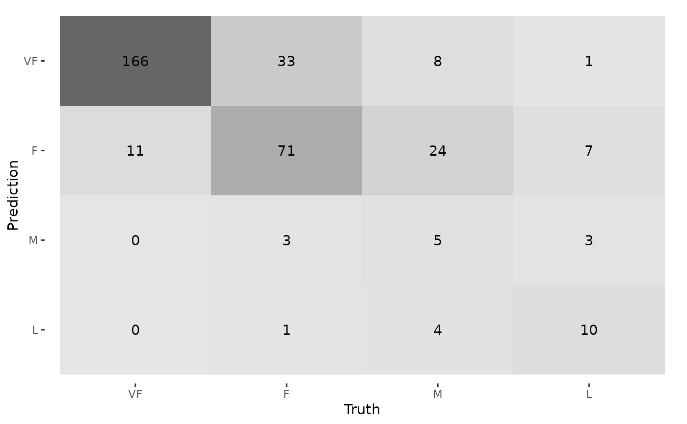

Calculates a cross-tabulation of observed and predicted classes.
conf_mat(data, ...) # S3 method for data.frame conf_mat(data, truth, estimate, dnn = c("Prediction", "Truth"), ...) # S3 method for conf_mat tidy(x, ...) # S3 method for conf_mat autoplot(object, type = "mosaic", ...)
Arguments
| data | A data frame or a |
|---|---|
| ... | Options to pass to |
| truth | The column identifier for the true class results
(that is a |
| estimate | The column identifier for the predicted class
results (that is also |
| dnn | A character vector of dimnames for the table. |
| x | A |
| object | The |
| type | Type of plot desired, must be "mosaic" or "heatmap", defaults to "mosaic". |
Value
conf_mat() produces an object with class conf_mat. This contains the
table and other objects. tidy.conf_mat() generates a tibble with columns
name (the cell identifier) and value (the cell count).
When used on a grouped data frame, conf_mat() returns a tibble containing
columns for the groups along with conf_mat, a list-column
where each element is a conf_mat object.
Details
For conf_mat() objects, a broom tidy() method has been created
that collapses the cell counts by cell into a data frame for
easy manipulation.
There is also a summary() method that computes various classification
metrics at once. See summary.conf_mat()
There is a ggplot2::autoplot()
method for quickly visualizing the matrix. Both a heatmap and mosaic type
is implemented.
The function requires that the factors have exactly the same levels.
See also
summary.conf_mat() for computing a large number of metrics from one
confusion matrix.
Examples
library(dplyr) data("hpc_cv") # The confusion matrix from a single assessment set (i.e. fold) cm <- hpc_cv %>% filter(Resample == "Fold01") %>% conf_mat(obs, pred) cm#> Truth #> Prediction VF F M L #> VF 166 33 8 1 #> F 11 71 24 7 #> M 0 3 5 3 #> L 0 1 4 10# Now compute the average confusion matrix across all folds in # terms of the proportion of the data contained in each cell. # First get the raw cell counts per fold using the `tidy` method library(purrr)#> #>#> #> #>library(tidyr) cells_per_resample <- hpc_cv %>% group_by(Resample) %>% conf_mat(obs, pred) %>% mutate(tidied = map(conf_mat, tidy)) %>% unnest(tidied) # Get the totals per resample counts_per_resample <- hpc_cv %>% group_by(Resample) %>% summarize(total = n()) %>% left_join(cells_per_resample, by = "Resample") %>% # Compute the proportions mutate(prop = value/total) %>% group_by(name) %>% # Average summarize(prop = mean(prop)) counts_per_resample#> # A tibble: 16 x 2 #> name prop #> <chr> <dbl> #> 1 cell_1_1 0.467 #> 2 cell_1_2 0.107 #> 3 cell_1_3 0.0185 #> 4 cell_1_4 0.00259 #> 5 cell_2_1 0.0407 #> 6 cell_2_2 0.187 #> 7 cell_2_3 0.0632 #> 8 cell_2_4 0.0173 #> 9 cell_3_1 0.00173 #> 10 cell_3_2 0.00692 #> 11 cell_3_3 0.0228 #> 12 cell_3_4 0.00807 #> 13 cell_4_1 0.000575 #> 14 cell_4_2 0.0104 #> 15 cell_4_3 0.0144 #> 16 cell_4_4 0.0320# Now reshape these into a matrix mean_cmat <- matrix(counts_per_resample$prop, byrow = TRUE, ncol = 4) rownames(mean_cmat) <- levels(hpc_cv$obs) colnames(mean_cmat) <- levels(hpc_cv$obs) round(mean_cmat, 3)#> VF F M L #> VF 0.467 0.107 0.018 0.003 #> F 0.041 0.187 0.063 0.017 #> M 0.002 0.007 0.023 0.008 #> L 0.001 0.010 0.014 0.032# The confusion matrix can quickly be visualized using autoplot() library(ggplot2) autoplot(cm, type = "mosaic")